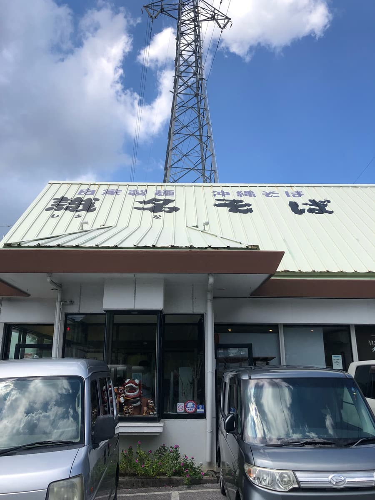
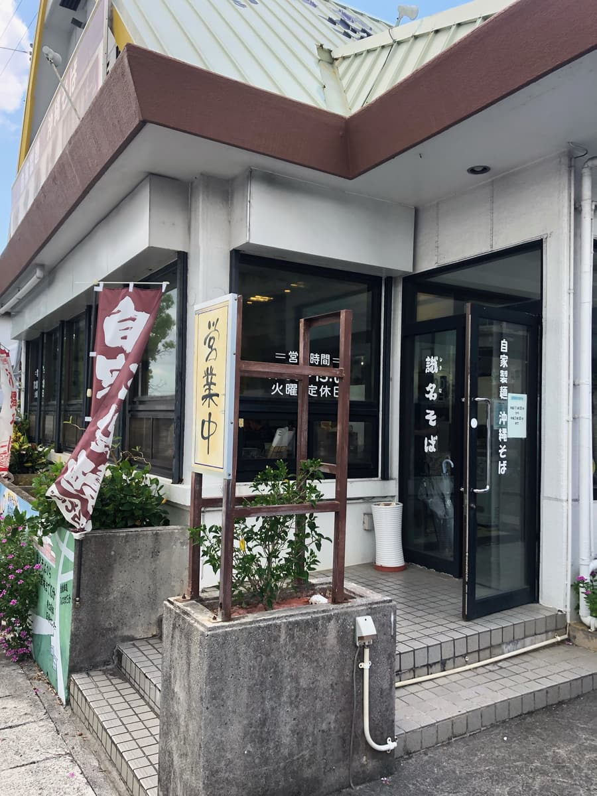
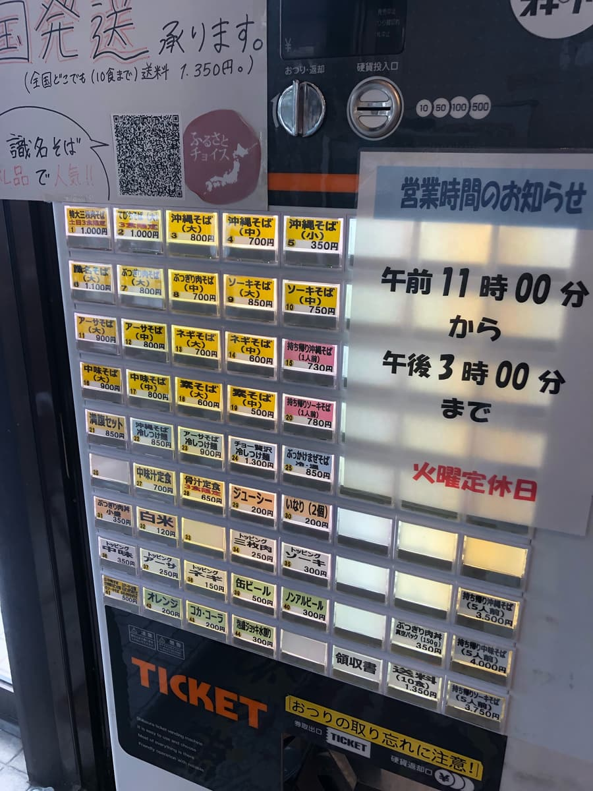
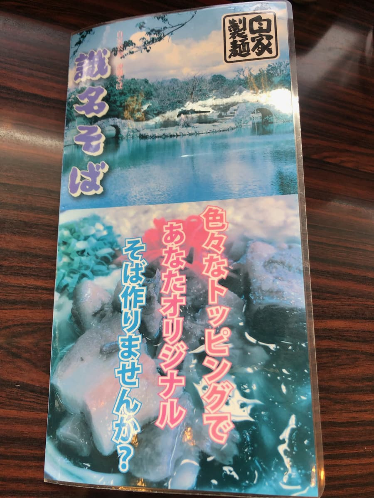
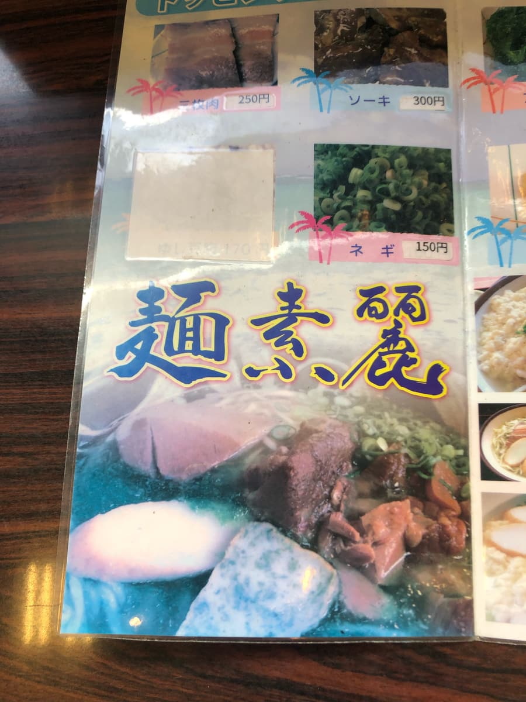
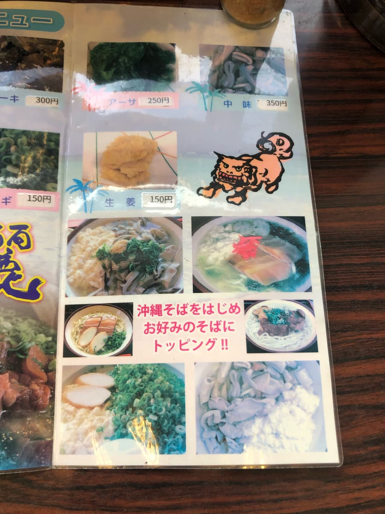
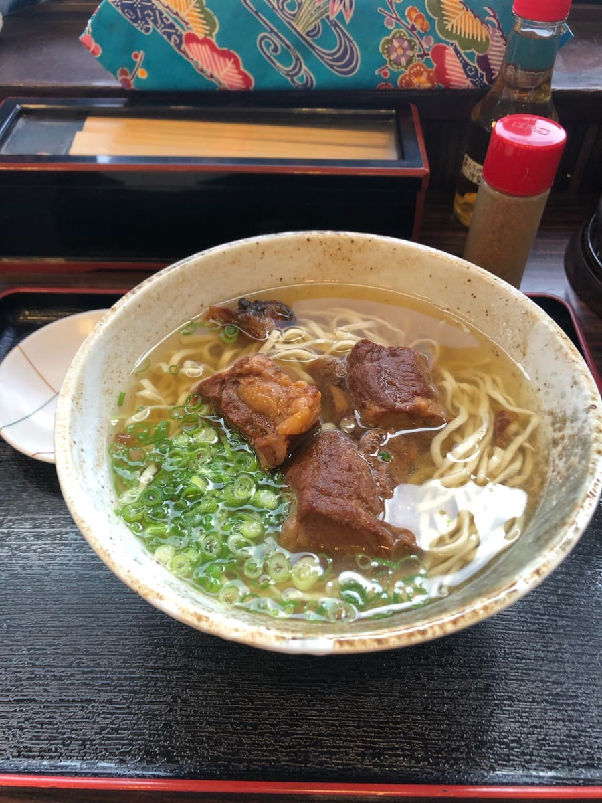
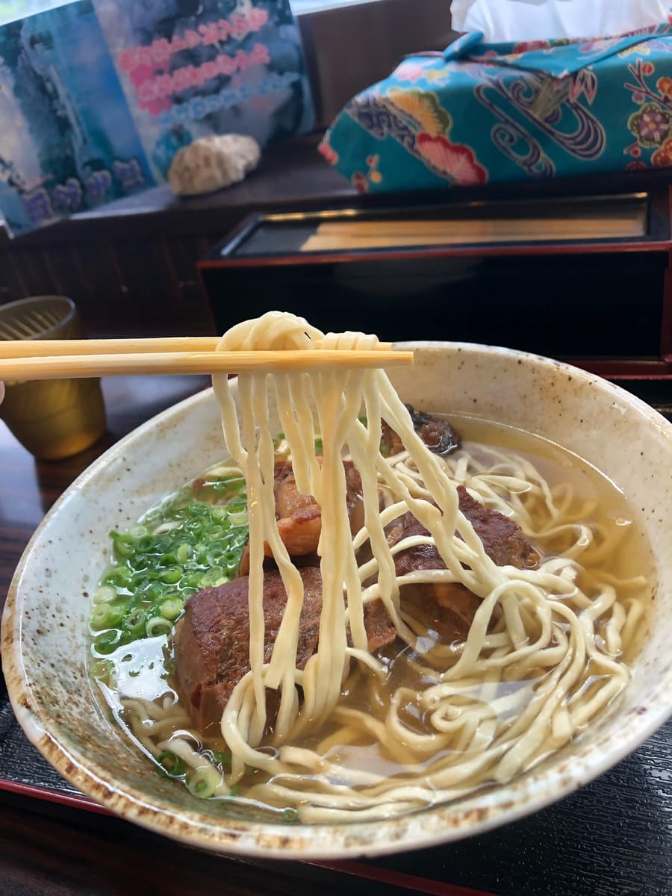

※이 글은 AI(Claude 3.5 sonnet)에게도 만들어 달라고 해서 일부를 제가 직접 덧붙여 업데이트했습니다ㅎㅎ
오키나와 소바 블로거 안지입니다😊 이번에는 나하시 시키나에 있는 “시키나 소바”에 다녀왔습니다! 오키나와 소바 순례 여행, 이번이 몇 번째 가게가 되려나~🤔 세어 보진 않았지만 아직 제패까지는 한참 멀었다고요~(주: AI가 거짓말을 하고 있어서 보충합니다. 약 177곳은 돌았습니다😆). 그래도 한 곳 한 곳 즐기면서 돌아다니려고 합니다!
자자, 이번에 방문한 “시키나 소바”, 간판이 눈에 띄어서 찾기 쉬웠어요😄 가게 외관을 보면 전형적인 오키나와 식당이라는 느낌으로, 왠지 그리운 분위기🏠


가게 안에 들어가니 식권 발매기가 마중. 캐시리스 결제가 안 되는 건 아쉽네요👍 메뉴를 보니 오키나와 소바 종류가 풍부! 고민되네요~. 그래도 이번에는 정석인 “소키 소바”를 주문했습니다😋
사실은 식권 발매기에서 추천하는 왼쪽 위 버튼인 “주말 한정 3그릇 특대 삼겹살 조림 소바”를 먹고 싶었는데, 이미 품절이었습니다(^0^;) 아쉽ㅋㅋ

가게 안은 손님들로 북적이고 있었습니다. 개점 직후에 들어갔는데 주차장도 꽉 차서 아슬아슬하게 들어갈 수 있었습니다(^0^;) 현지인보다 관광객이 많은 느낌. 이건 기대가 높아지네요~🔥



자, 기다리고 기다리던 “소키 소바”의 등장입니다! 우선 겉모습부터 맛있어 보인다😍 맑은 국물에 듬뿍 올린 파, 그리고 커다란 돼지갈비(소키)가 올라가 있습니다.

늘 하던 대로 먼저 국물부터 맛봅시다🥄 어라? 의외! 처음에는 가쓰오 육수가 확 올 줄 알았는데, 돼지뼈 풍미도 확실하게 느껴집니다. 가쓰오와 돼지뼈의 밸런스가 절묘하고, 굳이 말하자면 약간 가쓰오 베이스일까? 은은하게 가쓰오 풍미가 살아 있어서 깊은 맛이 납니다. 평범하게 맛있지만 두드러진 특징은 없으려나~.

다음은 면 갑니다~!🍜 자가제면을 쓰는 것 같고, 가는 면 타입. 쫄깃쫄깃한 식감이 좋네요~. 국물과도 잘 어우러져서 후루룩~ 하고 먹을 수 있습니다. 이건 꽤 취향이었어요! 자가제면은 맛있습니다😋
그리고 궁금한 고명, 뼈 있는 돼지갈비(혼소키)예요~🍖 보기에는 야들야들 부드러워 보이는데, 먹어 보니 조금 퍽퍽한 느낌. 달콤한 양념이라 오키나와다움은 느껴지지만, 군데군데 힘줄 같은 부분이 있어서 식감에 편차가 있더라고요. 음~, 조금 더 부드럽게 졸여 주었으면 최고였을지도😅
전체적으로 보면 “시키나 소바”의 오키나와 소바는 그럭저럭 맛있는 느낌일까. 특별히 놀랄 만한 포인트는 없지만, 안정된 맛의 오키나와 소바라는 느낌입니다. 현지 분들에게 오래 사랑받는 이유를 알 것 같네요.
여기서 늘 하는 안지식 평가를 해 봅시다!
평가(9.5점/15점): 면이 가장 추천 포인트였습니다! 자가제면의 쫄깃함, 이건 오키나와 소바를 좋아하는 사람에게는 참을 수 없죠😋
“시키나 소바”, 관광지에서 조금 떨어져 있지만 관광객과 현지 사람들로 북적이는 활기찬 가게였습니다. 나하 시내를 관광 중인 분이나 조금 현지 분위기를 맛보고 싶은 분께는 추천해요~.
면: ★★★✬☆（3.5）
수프: ★★★☆☆（3）
토핑: ★★★☆☆（3）
다만 인기 가게라서 점심때는 붐빌지도 모릅니다. 제가 갔을 때는 어떻게든 아슬아슬하게 주차장에 세울 수 있었지만, 타이밍에 따라서는 기다릴 수도 있으니 시간 여유를 갖고 방문하는 게 좋을지도 모르겠네요😉
마지막으로 작은 팁! “시키나 소바” 근처에는 시키나엔이 있어요. 세계유산에도 등록된 류큐 정원으로, 오키나와의 역사와 문화를 느낄 수 있는 곳. 소바를 먹은 뒤에 잠깐 산책해 보는 것도 좋을지도 몰라요🏯
자, 이번 오키나와 소바 순례는 여기까지! 다음엔 어디로 갈까나~🤔 오키나와에는 아직 맛있는 오키나와 소바 가게가 많이 있을 거예요. 앞으로도 여러분께 오키나와 소바의 매력을 전해 드릴게요!
그럼 다음에 또! 즐거운 오키나와 소바 라이프 되세요~🍜✨